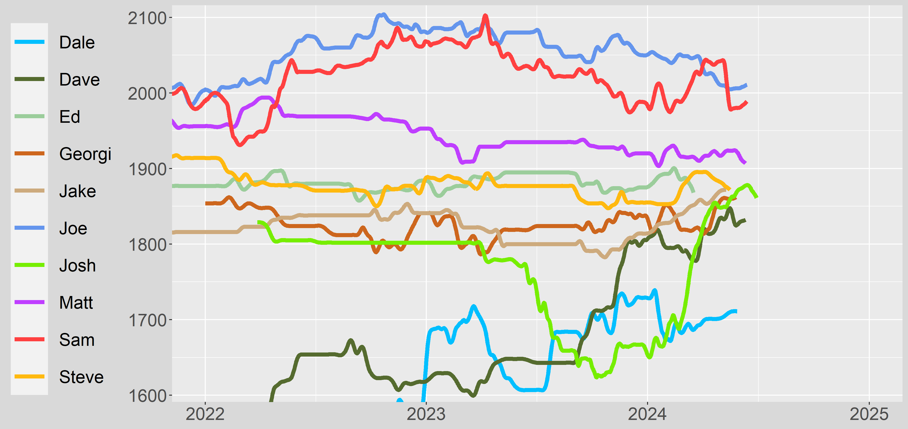

J-Ratings
Overview
A simple site to allow some of my friends to see their ratings updated (with graphs).
An added benfit of this site is the fact the graph doesn't reset every 6-months.
Rather, the data continues on the same graph but in a different colour so you can better see your progress.
I do not intend this project to turn into anything that requires a lot of work so I'll only update when I have time free. I also won't add too many people to keep the workload down.
Players
Overlay of Ratings
Updated 15-11-2022
2022-Present

2015-Present